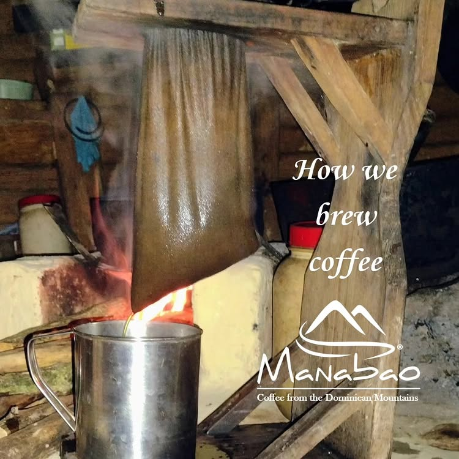
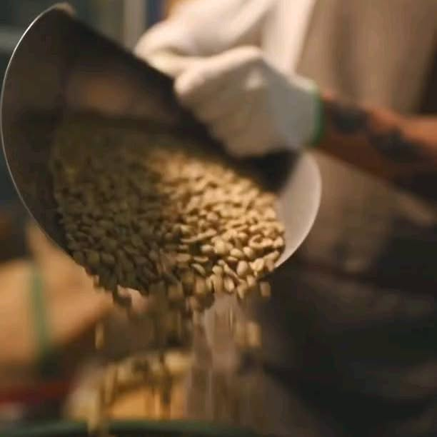

Where tradition meets mastery


"Coffee is not manufactured.
It is cultivated, shaped by hand,
and perfected through patience."
In the mountains of Manabao, coffee has always been brewed through a cloth filter — a method passed down through generations. The slow pour extracts a clean, full-bodied cup that no machine can replicate.
This is how our farmers start every morning, and it is the standard against which we measure every roast.
Dominican HeritageBefore a single bean is roasted, it is graded by hand. Our green beans are sorted for size, density, and color — removing any defect that could compromise the cup. Only the highest-grade lots make it into our roaster.
This attention to detail at every stage is what separates craft from commodity.
From cloth-filtered tradition to the barista's pour — every step is intentional, every cup is earned. This is Manabao.